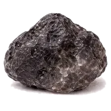

Mineral Grimoire
 Agni Manitite
Agni Manitite
Appearance
Dark volcanic glass, typically black to dark gray, naturally ocean-tumbled and polished. Smooth, glassy surface with an obsidian-like appearance.
Origin
Indonesia
Attributes
Agni manitite is a pseudo-tektite formed when an ancient volcanic eruption in Indonesia hurled molten magma into the sky, where it hardened into volcanic glass before falling back to Earth and landing in the ocean. After an estimated 700,000 years of wave action, most pieces are naturally smooth and polished. Though it was not created by a meteoric impact, it carries the same vibrational frequency as true tektites such as moldavite. Its name derives from the Sanskrit agni mani, meaning "pearl of divine fire." In Buddhist and Hindu tradition, it is revered as the Cintamani Stone, the legendary wishing stone of ancient lore, akin to the Philosopher's Stone in Western alchemy.
Healing
A powerful activator of the Solar Plexus Chakra. Placed there, it amplifies personal power, boosts energy levels, and increases feelings of optimism and joy. It accelerates the manifestation process by deepening the bearer's connection to their own will and to the Divine. Worn as an amulet, it supports leadership and a sense of confident control over personal matters.
Position
Place on the Solar Plexus Chakra for personal power and manifestation work. Wear as an amulet for ongoing leadership and confidence support.
Spellworking
Agni manitite is a pseudo-tektite of volcanic origin from Indonesia, sharing its high vibrational frequency with true tektites despite having been born from earthly fire rather than meteoric impact. Named for Agni, the Hindu god of fire, lightning, comets, and the sun's flame, it carries the energy of divine ignition — the primordial spark from which all life and creation arise. In the Buddhist and Hindu traditions it is called the Cintamani Stone, one of the most sacred objects of ancient legend.
Chakra Work
Agni manitite is a Solar Plexus stone of exceptional potency. Its fire-born energy connects the bearer to their deepest source of personal power, cutting through self-doubt, stagnation, and limiting beliefs. It creates a grounding and protective field around the bearer, shielding against both negative thought patterns originating within and harmful influences coming from outside. Placed at the Solar Plexus, it elevates vibration, opens a channel to joy and fulfillment, and accelerates the movement of intentions into physical form.
For the Beginner: Agni manitite encourages spiritual awakening by illuminating what needs to change and inspiring the bearer to raise their vibration toward their highest good. It supports confident forward movement by establishing a protective energetic foundation.
For the Advanced Practitioner: Agni manitite is one of the most powerful stones available for Kundalini activation — the energy of transformative awakening that, once stirred, opens access to deeper wells of wisdom, insight, and creative power. Working with it during the new moon amplifies intentions and speeds their material manifestation. Pairs with Fire Opal, Moldavite, Obsidian, or Tektite for intensified transformation, spiritual awakening, and manifestation work.
The Activation Eleven
Agni manitite is a member of the Activation Eleven, a collection of high-vibration crystals designed to enhance spiritual evolution and quantum ascension. Working with agni manitite opens new psychic and spiritual pathways and connects the bearer to a major vortex in Earth's planetary grid. By accessing this power, you can more easily send and receive information to and from all forms of nature. As a pseudo-tektite born of volcanic fire rather than meteoric collision, it carries an Atlantean frequency tied to the physical creation of structure and form on this planet. Combine with the other members of the Activation Eleven or with the original Synergy Twelve to experience amplified synergistic ascension energies.
Magickal Message
"If you have been seeking more spark and adventure in your life, I am here as your ally to help you set free your inner fire. Liberate yourself from the inhibitions, thought patterns, and habits that have been holding you back in life! I will support you as you bring your visions to life."
Colors
Agni manitite is dark volcanic glass, ranging from black to dark gray. Its surface is typically glassy and smooth, naturally polished by centuries of ocean tumbling. Some specimens display subtle inner luminosity when held to light.